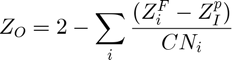
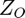
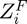
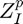
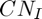

Example on how to assign MINFF atomtypes to a mineral atom struct
See also the advanced examples
Contents
- First set some convenient matlab settings
- Set input and output filenames
- Import a unit cell structure and replicate it into a mineral layer
- Perform isomorphic substitution using substitute_atom
- Write a MINFF (Holmboe, to be submitted) .pdb file
- Assign the modified MINFF atomtypes to the montmorillonite atom struct
- Heal and assign the modified MINFF atomtypes to the montmorillonite atom struct
- Write the new modified MINFF .pdb file
First set some convenient matlab settings
format compact; set(gcf,'Visible','on');
Set input and output filenames
filename_in='Pyrophyllite.pdb'; % default is 'Pyrophyllite.pdb' filename_out='6x4x1_MMT_minff_2004.pdb'; % default is 'Pyrophyllite.pdb'
Import a unit cell structure and replicate it into a mineral layer
Normally, when constructing a mineral particle and assigning the MINFF atomtypes, one usually start of by building the mineral particle from an X-ray determined unit cell structure. In this example we will demonstrate how to generate a montmorillonite layer particle from a pyrophyllite unit cell. Both minerals are so-called 2:1 T-O-T sheet silicate minerals, with the difference between the two isostructural minerals being (as you may know) the fact that montmorillonite carries charge defects due to isomorphic substitution. For montmorillonite this means substitution of Si4+ with Al3+ in the two tetrahedral sheets, or octahedral Al3+ with Mg2+ or Fe2+ in the octahedral sheet of the montmorillonite layer.
atom = import_atom(filename_in); % Imports a pyrophyllite unit cell atom = replicate_atom(atom,Box_dim,[6 4 1]); % Replicate the structure by 6x4x1 into a Pyrophyllite clay layer
Perform isomorphic substitution using substitute_atom
substitute_atom was written with centrosymmetric minerals in mind, therfore it works best if the layer is centered at z=0 in the xy-plane. It can handle both substitutions in the octahedral as well as in the tetrahedral sheets. It distributes the substituted sites randomly, except for the fact that one can choose a nearest distance between the substituted sites, which in this example is 5.5 Ångström. We do this to avoid oxygen atoms facing two substituted sites at the same time (Google Löwenstein's rule).
atom = substitute_atom(atom,Box_dim,6*4*2/3,'Al','Mgo',5.5) % Perform octahedral (only) substitutions on 2/3's of all Al sites. Here 5.5 is the minimum distance between the substituted Mg2+ sites % atom = substitute_atom(atom,Box_dim,14,'Al','Mgo',5.5,2,'Si','Al',5.5) % 14 octahedral substitutions and 2 tetrahedral substitutions
Write a MINFF (Holmboe, to be submitted) .pdb file

 is the partial charge of the oxygen atom, and the summation is taken over all neighbouring cations, where  is the formal charge,  is the partial charge and  is the coordination number of the cation. Although not explicitly stated/used in the original MINFF publication by Cygan et al 2004, this formula can also be used to calculate the partial charge of the oxygen atomtypes in the original MINFF. Hence one can assume that the partial charge of any new oxygen atomtype calculated in this way is (more or less...) consisted with all the other atoms/charges in MINFF.
Below is the list of atomtype names from the Cygan, 2004 paper and the ones modified here, having atomtype names that simply make more sense to me. Note that I have also added a few to the Cygan, (Cygan et al 2004) atomtypes, like oahe/oahhe/oshe etc.
% MINFF (MHolmboe) = {'Hw', 'H','Ow','Oh','O', 'Omg', 'Oalt','Odsub','Ohmg','Oalsi','Oalhh','Oalh','Osih','Si','Al','Alt','Mgo','Mgh','Cao','Cah','Feo','Lio','Li','Na','K','Rb','Cs','Mg','Ca','Sr','Ba','F','Cl','Br','I'}';
Assign the modified MINFF atomtypes to the montmorillonite atom struct
atom_minff = minff_atom(atom,Box_dim) % Assign the minff atom types to the atomstruct % atom_minff = minff_atom(atom,Box_dim,'minff','spc',[1 2]) % In case of 14 octahedral substitutions and 2 tetrahedral substitutions as above, add a final argument [1 2] to iterate over the structure twice the assign the atomtypes correctly
Heal and assign the modified MINFF atomtypes to the montmorillonite atom struct
In cases were atoms need healing, or in order to protonate edge groups, one can use a slighlt longer command like below. For more info look into the minff_atom function and lines 49-80.
atom_minff = minff_atom(atom_minff,Box_dim,'minff',[1:7]) % Assign the minff atom types to the atomstruct
Write the new modified MINFF .pdb file
write_atom_pdb(atom_minff,Box_dim,strcat('mod_',filename_out)); % Print the clay layer to a .pdb file